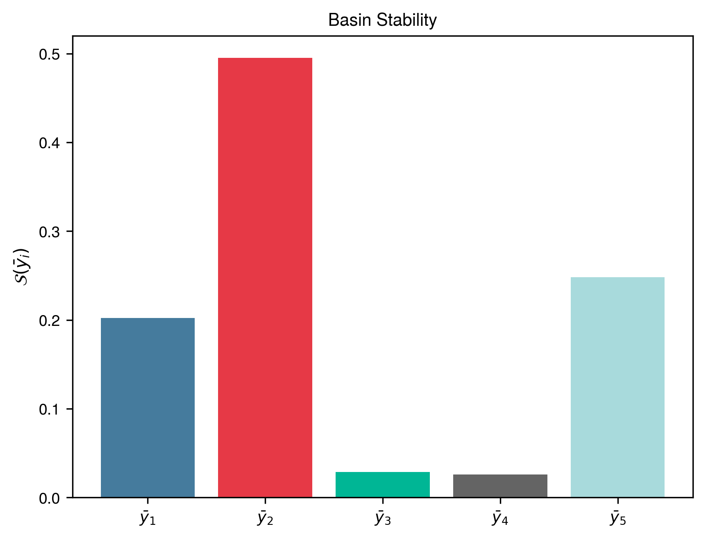
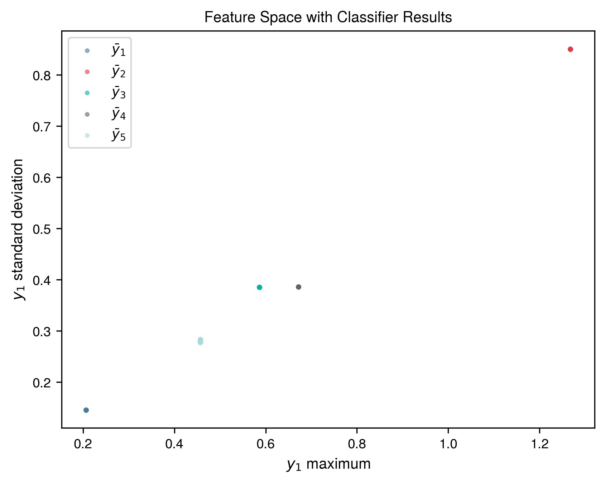
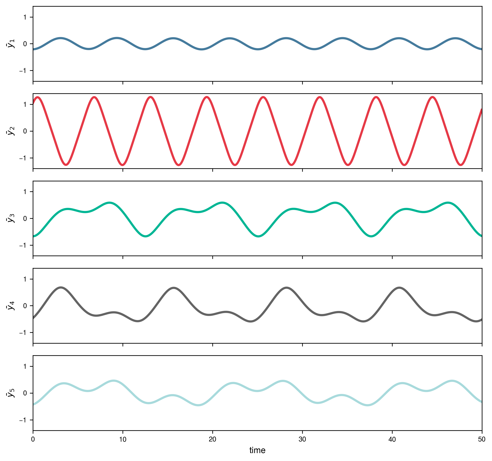
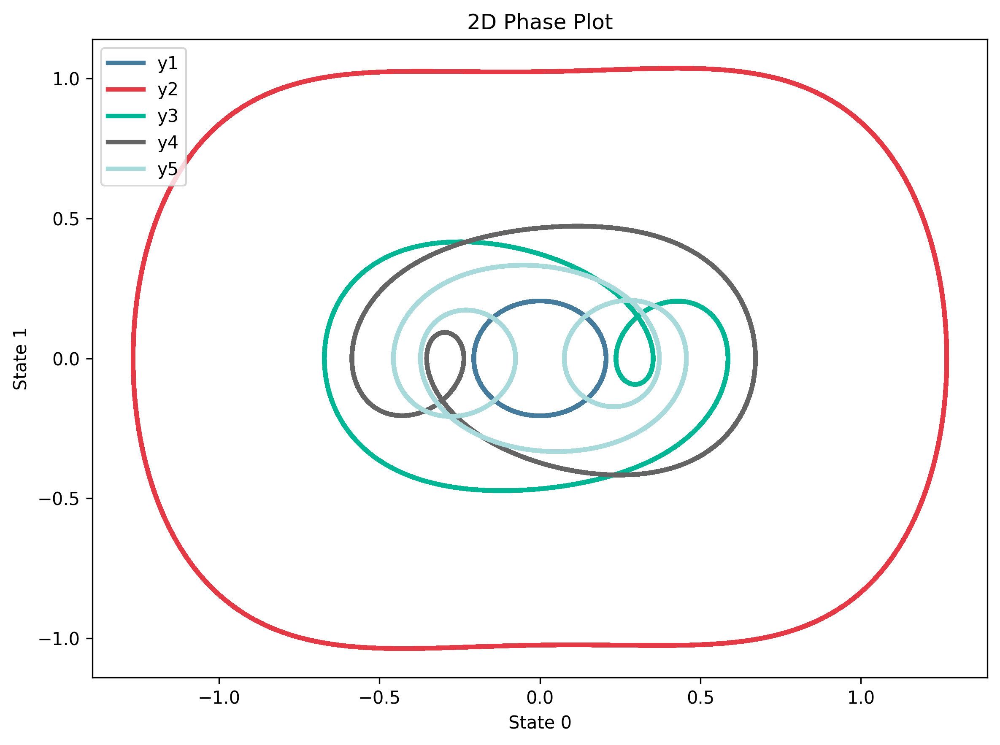
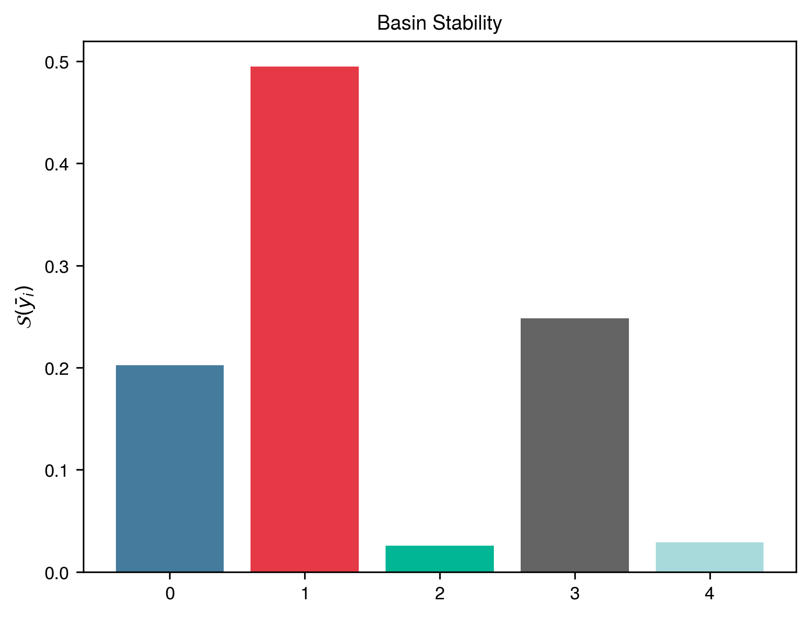
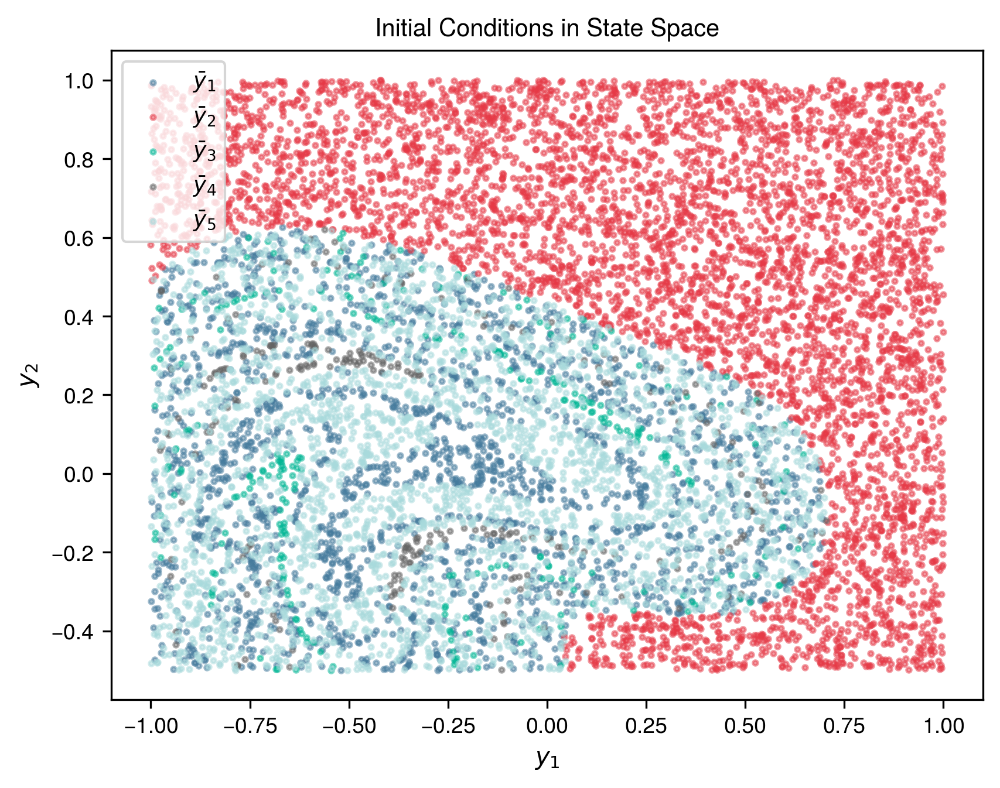
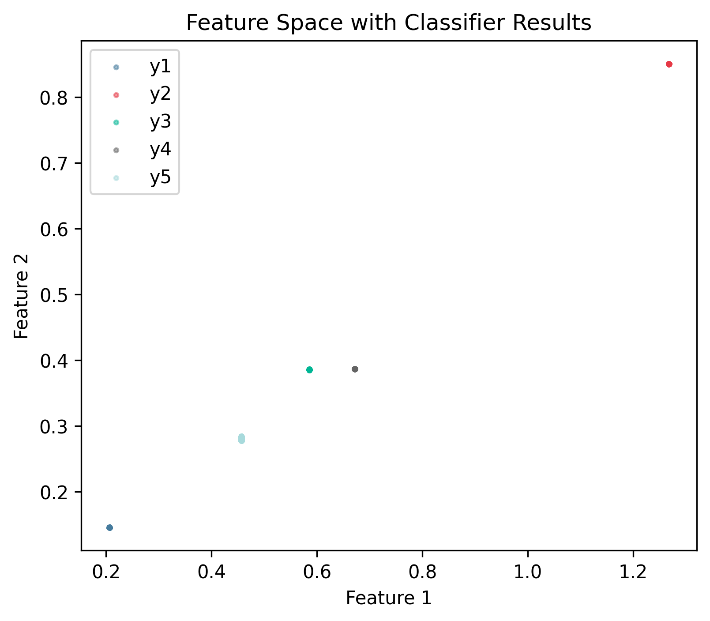

Duffing Oscillator
System Description
Duffing oscillator with cubic nonlinearity:
\[
\begin{aligned}
\dot{x} &= v \\
\dot{v} &= -\delta v - k_3 x^3 + A \cos(t)
\end{aligned}
\]
System Parameters
| Parameter | Symbol | Value |
|---|---|---|
| Damping coefficient | \(\delta\) | 0.08 |
| Cubic stiffness | \(k_3\) | 1.0 |
| Forcing amplitude | \(A\) | 0.2 |
Sampling
- Dimension: \(D = 2\)
- Sample size: \(N = 10000\)
- Distribution: \(\rho\) = Uniform
- Region of interest: \(\mathcal{Q}(x, v) : [-1, 1] \times [-0.5, 1]\)
Solver
| Setting | Value |
|---|---|
| Method | Dopri5 (Diffrax) |
| Time span | \([0, 1000]\) |
| Steps | 5000 (\(f_s\) = 5 Hz) |
| Relative tolerance | 1e-08 |
| Absolute tolerance | 1e-06 |
Feature Extraction
Maximum and standard deviation of position:
- States: \(x\) (state 0)
- Formula: \([\max(x), \sigma(x)]\)
- Transient cutoff: \(t^* = 900.0\)
Clustering
- Method: k-NN (k=1)
- Template ICs:
- y1: \([-0.21, 0.02]\) — Period-1 limit cycle (small amplitude)
- y2: \([1.05, 0.77]\) — Period-1 limit cycle (large amplitude)
- y3: \([-0.67, 0.02]\) — Period-2 limit cycle
- y4: \([-0.46, 0.30]\) — Period-2 limit cycle (symmetric)
- y5: \([-0.43, 0.12]\) — Period-3 limit cycle
Reproduction Code
Setup
def setup_duffing_oscillator_system() -> SetupProperties:
n = 10000
device = "cuda" if torch.cuda.is_available() else "cpu"
print(f"Setting up Duffing oscillator system on device: {device}")
params: DuffingParams = {"delta": 0.08, "k3": 1, "A": 0.2}
ode_system = DuffingJaxODE(params)
sampler = UniformRandomSampler(min_limits=[-1, -0.5], max_limits=[1, 1], device=device)
solver = JaxSolver(
time_span=(0, 1000),
n_steps=5000,
device=device,
rtol=1e-8,
atol=1e-6,
cache_dir=".pybasin_cache/duffing",
)
feature_extractor = TorchFeatureExtractor(
time_steady=900.0,
normalize=False,
features=None,
features_per_state={
0: {"maximum": None, "standard_deviation": None},
},
)
classifier_initial_conditions = [
[-0.21, 0.02],
[1.05, 0.77],
[-0.67, 0.02],
[-0.46, 0.30],
[-0.43, 0.12],
]
classifier_labels = [
"y1",
"y2",
"y3",
"y4",
"y5",
]
knn = KNeighborsClassifier(n_neighbors=1)
template_integrator = TemplateIntegrator(
template_y0=classifier_initial_conditions,
labels=classifier_labels,
ode_params=params,
)
return {
"n": n,
"ode_system": ode_system,
"sampler": sampler,
"solver": solver,
"feature_extractor": feature_extractor,
"estimator": knn,
"template_integrator": template_integrator,
}
Main Estimation
def main():
setup = setup_duffing_oscillator_system()
bse = BasinStabilityEstimator(
n=setup["n"],
ode_system=setup["ode_system"],
sampler=setup["sampler"],
solver=setup.get("solver"),
feature_extractor=setup.get("feature_extractor"),
predictor=setup.get("estimator"),
template_integrator=setup.get("template_integrator"),
output_dir="results",
feature_selector=None,
)
bse.estimate_bs()
return bse
Case 1: Baseline Results (Supervised)
Comparison with MATLAB bSTAB
Overall Classification Quality:
- Macro F1-score: 0.9980
- Matthews Correlation Coefficient: 0.9977
| Attractor | pyBasin BS ± SE | bSTAB BS ± SE | F1 |
|---|---|---|---|
| y1 | 0.2023 ± 0.0040 | 0.2027 ± 0.0040 | 0.9965 |
| y2 | 0.4950 ± 0.0050 | 0.4950 ± 0.0050 | 1.0000 |
| y3 | 0.0288 ± 0.0017 | 0.0288 ± 0.0017 | 1.0000 |
| y4 | 0.0257 ± 0.0016 | 0.0257 ± 0.0016 | 0.9961 |
| y5 | 0.2482 ± 0.0043 | 0.2478 ± 0.0043 | 0.9972 |
Visualizations
Basin Stability

State Space

Feature Space

Template Trajectories

Template Phase Space

Case 2: Unsupervised Clustering with Template Relabeling
This case demonstrates unsupervised attractor discovery using DBSCAN clustering, followed by relabeling using KNN template matching to assign meaningful attractor names.
Comparison with MATLAB bSTAB
Cluster Quality Metrics:
- Clusters found: 5 (expected: 5)
- Overall agreement: 100.0%
- Adjusted Rand Index: 1.0000
- Macro F1-score: 0.9980
- Matthews Correlation Coefficient: 0.9977
| Attractor | DBSCAN | Purity | pyBasin BS ± SE | bSTAB BS ± SE | F1 |
|---|---|---|---|---|---|
| y1 | 0 | 100.0% | 0.2023 ± 0.0040 | 0.2027 ± 0.0040 | 0.9965 |
| y2 | 1 | 100.0% | 0.4950 ± 0.0050 | 0.4950 ± 0.0050 | 1.0000 |
| y3 | 4 | 100.0% | 0.0288 ± 0.0017 | 0.0288 ± 0.0017 | 1.0000 |
| y4 | 2 | 100.0% | 0.0257 ± 0.0016 | 0.0257 ± 0.0016 | 0.9961 |
| y5 | 3 | 100.0% | 0.2482 ± 0.0043 | 0.2478 ± 0.0043 | 0.9972 |
Visualizations
Basin Stability

State Space

Feature Space
